الحركة المفاهيمية الحركة التبسيطية حركة ما بعد التبسيط حركة الضوء و الفضاء حركة الفن البيئي (فن الأرض) حركة الخردة الحركة الكيتش حركة الفن العلائقي حركة الفانك حركة الواقعية القصوى (الفائقة) حركة الواقعية المعاصرة حركة ترانسافانتجارد الحركة اللوحة الأروبية الجديدة حركة القصوى حركة فن الشارع حركة انخفاض المستوى حركة الفن العالق
الحركة المفاهيمية

الحضارة المسيحية الغربية - ليون فيراري
الفن المفاهيمي ، الذي يطلق عليه أحيانًا ببساطة المفهومية
، هو فن يكون فيه للمفهوم (المفاهيم) أو الفكرة (الأفكار) المتضمنة في
العمل الأسبقية على الاهتمامات الجمالية والتقنية والمادية التقليدية. قد يتم إنشاء بعض الأعمال الفنية المفاهيمية
، التي تسمى أحيانًا التركيبات ، من قبل أي شخص بمجرد اتباع مجموعة من التعليمات المكتوبة. كانت هذه
الطريقة أساسية للفنان الأمريكيسول ليويتتعريف الفن المفاهيمي ، وهو من أوائل ما ظهر في المطبوعات:
يؤكد توني جودفري ، مؤلف كتاب `` الفن المفاهيمي '' (الفن والأفكار) (1998) ، أن الفن المفاهيمي
يشكك في طبيعة الفن ، وهو مفهومجوزيف كوسوثارتقى إلى تعريف الفن نفسه في بيانه المبدئي الأولي للفن
المفاهيمي ، "الفن بعد الفلسفة" (1969). كانت الفكرة القائلة بأن الفن يجب أن يدرس طبيعته الخاصة بالفعل
جانبًا قويًا من رؤية الناقد الفني المؤثر كليمنت جرينبيرج للفن الحديث خلال الخمسينيات. مع ظهور فن قائم
على اللغة حصريًا في الستينيات ، كان الفنانون المفاهيمي مثلجوزيف كوسوثو لورانس وينر والإنجليزية الفن
وأمبير. لغةبدأت المجموعة في استجواب الفن أكثر جذرية مما كان ممكنًا في السابق (انظر أدناه). كان من أول
وأهم الأشياء التي تساءلوا عنها هو الافتراض الشائع بأن دور الفنان هو إنشاء أنواع خاصة من الأشياء المادية.
من خلال ارتباطه بالفنانين البريطانيين الشباب وجائزة تيرنر خلال التسعينيات ، في الاستخدام الشعبي
، ولا سيما في المملكة المتحدة ، جاء "الفن المفاهيمي" للإشارة إلى كل
الفنون المعاصرة التي لا تمارس المهارات التقليدية للرسم والنحت. يمكن القول أن أحد أسباب ارتباط مصطلح
"الفن المفاهيمي" بممارسات معاصرة مختلفة بعيدة كل البعد عن أهدافه وأشكاله الأصلية يكمن في مشكلة تعريف
المصطلح نفسه. كفنانميل بوشنرتم اقتراحه في وقت مبكر من عام 1970 ، في شرح سبب عدم إعجابه بعبارة "مفاهيمي" ،
فليس من الواضح دائمًا ما يشير إليه مصطلح "المفهوم" ، كما أنه ينطوي على خطر الخلط بينه وبين "النية". وبالتالي ،
عند وصف أو تعريف عمل فني كمفهوم ، من المهم عدم الخلط بين ما يشار إليه على أنه "مفاهيمي" و "نية" الفنان.
الحركة التبسيطية

الهيكل الأسود المفتوح - سول ليوبت
في الفنون المرئية والموسيقى والوسائط الأخرى ، يعد التقليلية أسلوبًا يستخدم عناصر تصميم مختصرة.
بدأت بساطتها في الفن الغربي بعد الحرب العالمية الثانية ، وبقوة مع
الفنون البصرية الأمريكية في الستينيات وأوائل السبعينيات. يشمل الفنانون البارزون المرتبطون بالحد الأدنىدونالد
جودو جون مكراكينو أغنيس مارتنو دان فلافينروبرت موريس ، آن ترويت، و فرانك ستيلا. إنه مشتق من الجوانب الاختزالية
لـالحداثة وغالبًا ما يتم تفسيره على أنه رد فعل ضد التعبيرية المجردة وجسر ل بعد الحد الأدنىالممارسات الفنية.
يجد المرء جذورًا أوروبية للبساطة في التجريدات الهندسية للرسامين المرتبطين بـباوهاوس، في أعمال كازيمير
ماليفيتشو بيت موندريان وغيرهم من الفنانين
المرتبطين بـ دي ستيل الحركة و البنائية الروسية في الحركة ، وفي أعمال النحات الروماني قسطنطين برانكوي.
حركة ما بعد التبسيط
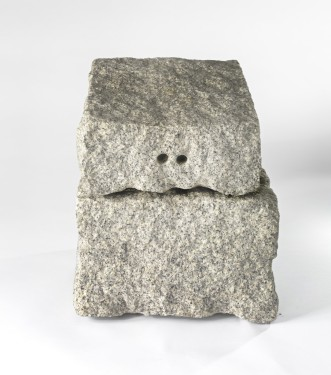بدون عنوان (شكل تانترا) - جيمس لي بيارس
Postminimalism هو مصطلح فني صاغه روبرت بينكوس-ويتن في عام 1971 في مجالات فنية مختلفة للعمل الذي يتأثر بجماليات
أو يحاول تطويرها وتجاوزها. شيوع. يستخدم التعبير على وجه التحديد فيما يتعلق بالموسيقى
والفنون المرئية ، ولكن يمكن أن يشير إلى أي مجال يستخدم بساطتها كنقطة مرجعية حاسمة.
في الموسيقى ، يشير مصطلح ما بعد الحد الأدنى إلى الموسيقى التي تتبع الحد الأدنى من الموسيقى.
في الفن المرئي ، يستخدم فن ما بعد الحد الأدنى البساطة إما كنقطة مرجعية جمالية أو مفاهيمية.
ما بعد الحد الأدنى هو اتجاه فني أكثر من كونه حركة معينة. عادة ما تكون الأعمال الفنية ما بعد الحد الأدنى من الأشياء
اليومية ، وتستخدم مواد بسيطة ، وفي بعض الأحيان تتخذ شكلًا جماليًا "خالصًا". ومع ذلك ، نظرًا لأن ما بعد الحد
الأدنى يشمل مجموعة متنوعة ومتباينة من الفنانين ، فمن المستحيل تعداد جميع أوجه الاستمرارية والتشابه بينهما.
عملإيفا هيس هي أيضًا ما بعد الحد الأدنى: فهي تستخدم "الشبكات" و "التسلسل" ، وهي موضوعات
غالبًا ما توجد في بساطتها ، ولكنها أيضًا عادة ما تكون مصنوعة يدويًا ، حيث تُدخل عنصرًا بشريًا في فنها
، على عكس الآلة أو الأعمال المصممة خصيصًا من التقليلية. ريتشارد سيراهو ما بعد الحد الأدنى البارز.
حركة الضوء و الفضاء
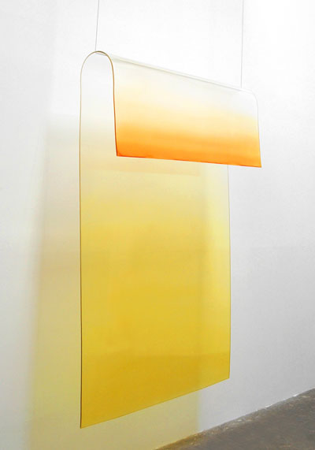بدون عنوان - كريج كوفمان
يشير الضوء والفضاء إلى حركة فنية مرتبطة بشكل فضفاض الفن التجريديو شيوعوالتجريد
الهندسي نشأ في جنوب كاليفورنيا في
الستينيات وتأثر بجون ماكلولين. وتميزت بالتركيز على الظواهر الإدراكية ، مثل الضوء والحجم والمقياس ،
واستخدام مواد مثل الزجاج ، والنيون ، ومصابيح الفلورسنت ، والراتنج ، والأكريليك المصبوب ، وغالبًا
ما تشكل تركيبات مكيفة حسب محيط العمل. سواء من خلال توجيه تدفق الضوء الطبيعي ، أو تضمين الضوء
الاصطناعي داخل الأشياء أو العمارة ، أو من خلال اللعب بالضوء من خلال استخدام مواد شفافة أو شفافة
أو عاكسة ، فقد جعل فنانو الضوء والفضاء تجربة المتفرج للضوء والظواهر الحسية الأخرى في ظل
ظروف محددة محور عملهم.لقد كانوا يدمجون في عملهم أحدث التقنيات الخاصة بالصناعات الهندسية
والفضائية في جنوب كاليفورنيا لتطوير أجسامهم الحسية المليئة بالضوء. لخص توريل ، الذي نشر
الحركة في جميع أنحاء العالم ، فلسفته في قوله ، "نحن نأكل الضوء ، نشربه من خلال جلودنا".
انعكست طبيعة الأعمال في عنوان المعرض في جامعة كاليفورنياالتي قدمت الحركة الناشئة
في عام 1971: "الشفافية ، الانعكاس ، الضوء ، الفضاء: أربعة فنانين". قدم العرض عمل بيتر الكسندر
،لاري بيلوروبرت ايروين وكريغ كوفمان. الفنانون الآخرون المرتبطون بالحركة هم رون كوبر ،ماري كورسو جون
مكراكينو بروس نعمانماريا نوردمان ، إريك أور ، هيلين باشجيانو جيمس توريلو ديوين فالنتين، ودوغ ويلر.
تأثرت مجموعة مشهورة من فناني نظرية الألوان المجردة بحركة الضوء والفضاء ، ولا سيما: فريدريك سبرات ،
وفيل سيمز ،آن أبليبي، وديفيد سيمبسون. يشمل الفنانون المعاصرون البارزون الذين يمارسون في حركة الضوء
والفضاءأولافور إلياسون، آن فيرونيكا يانسنز ، جينيفر ستينكامب ، جيزيلا كولونوصوفيا كولير وتود ويليامسون.
قام إروين وتوريل ، على سبيل المثال ، بالتحقيق
في ظاهرة الحرمان الحسي (التي أثرت على تطوير أعمالهم الخفيفة المماثلة) كجزء
من برنامج الفن والتكنولوجيا الذي بدأه متحف مقاطعة لوس أنجلوس للفنون في عام 1967. ويلر RM 669 (1969) عبارة عن جدران بيضاء منحنية مغطاة بأرضية وسقف يبدو أنها تنحسر مع كل خطوة
يخطوها المرء نحو مربع الضوء الموضوع على الجدار البعيد ، مما يجعل المشاهدين غير قادرين على تثبيت أعينهم على أي سطح. بالنسبة لسلسلة أعماله حول موضوع الكيمياء
، استخدم إريك أور الضوء الطبيعي بالإضافة إلى الدم والنار في بيئاته التي تنتج استجابات شبكية شديدة. تحتوي اللوحات الزجاجية الكبيرة ذات اللون الأبيض
على الأبيض من Mary Corse على حبات زجاجية دقيقة مدمجة في طلاء الأكريليك لإنشاء سطح يتحول بشكل كبير مع الضوء.ابتكرت هيلين باشجيان كرات أكريليك ، كرات ذات
توهج غير واقعي ، تبدو مضاءة من الداخل. في الآونة الأخيرة ، ابتكرت جيزيلا كولون ، التي تم الاعتراف بها في ArtForum كفنانة من الجيل التالي في مجال الإضاءة والفضاء ، "كرات أكريليك غير منتظمة الشكل مثبتة على
الحائط
... يبدو أنه يتغير لونه عندما يتحرك المرء من حوله ، كما لو كان مضاءًا بمصابيح
متعددة الألوان ".كما لو كانت مضاءة بمصابيح متعددة السطوح ".كما لو كانت مضاءة بمصابيح متعددة السطوح ".
حركة الفن البيئي (فن الأرض)
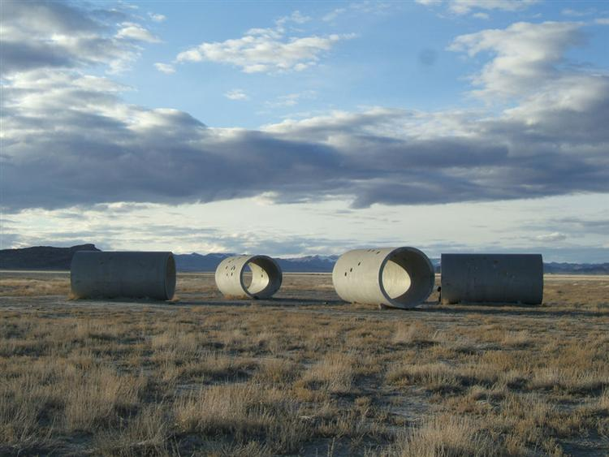أنفاق الشمس - نانسي هولت
الفن البيئي هو مجموعة من الممارسات الفنية التي تشمل كل من الأساليب
التاريخية للطبيعة في الفن وأنواع الأعمال البيئية والدوافع
السياسية الأكثر حداثة. لقد تطور الفن البيئي بعيدًا عن الاهتمامات الرسمية ، وعمل مع الأرض كمواد نحتية ، نحو علاقة
أعمق بالأنظمة والعمليات والظواهر فيما يتعلق بالاهتمامات الاجتماعية. ظهرت المناهج الاجتماعية والبيئية المتكاملة
التي تم تطويرها كموقف أخلاقي ترميمي في التسعينيات. على مدى السنوات العشر الماضية ، أصبح الفن البيئي نقطة
محورية للمعارض في جميع أنحاء العالم حيث أصبحت الجوانب الاجتماعية والثقافية لتغير المناخ في المقدمة.
غالبًا ما يشمل مصطلح "الفن البيئي" الاهتمامات "البيئية" ولكنه ليس خاصًا بها. يحتفل في المقام الأول بعلاقة
الفنان بالطبيعة باستخدام المواد الطبيعية. من الأفضل فهم المفهوم في علاقته بالتاريخيفن الأرض / الأرضوالمجال
المتطور للفن البيئي. المجال متعدد التخصصات في حقيقة أن الفنانين البيئيين يتبنون أفكارًا من العلوم والفلسفة.
تشمل الممارسة وسائل الإعلام التقليدية ووسائل الإعلام الجديدة وأشكال الإنتاج الاجتماعي النقدية. يشمل العمل مجموعة
كاملة من المناظر الطبيعية / الظروف البيئية من الريف إلى الضواحي والحضر وكذلك الصناعة الحضرية / الريفية.
يمكن القول أن الفن البيئي بدأ برسومات الكهوف من العصر الحجري القديم لأسلافنا. في
حين لم يتم العثور على أي مناظر طبيعية (حتى الآن) ، مثلت لوحات الكهوف جوانب أخرى من الطبيعة مهمة للإنسان
الأوائل مثل الحيوانات والشخصيات البشرية. "إنها ملاحظات ما قبل التاريخ عن الطبيعة. بطريقة أو بأخرى ، ظلت
الطبيعة لقرون الموضوع المفضل للفن الإبداعي." تنبع المزيد من الأمثلة الحديثة للفن البيئي من رسم المناظر
الطبيعية والتمثيل. عندما رسم الفنانون في الموقع ، طوروا علاقة عميقة بالبيئة المحيطة وطقسها وأدخلوا
هذه
الملاحظات عن كثب في لوحاتهم.جون كونستابللوحات السماء "تمثل السماء في الطبيعة عن كثب". تجسد سلسلة Monet's London Series أيضًا علاقة الفنان بالبيئة. "بالنسبة لي ، لا يوجد منظر طبيعي في حد ذاته ،
حيث يتغير مظهره في كل لحظة ؛ لكن الجو المحيط يجلبه إلى الحياة ، والهواء
والضوء ، اللذين يختلفان باستمرار بالنسبة لي ، إنه فقط الجو المحيط يعطي الموضوعات قيمتها الحقيقية ".
حركة الخردة
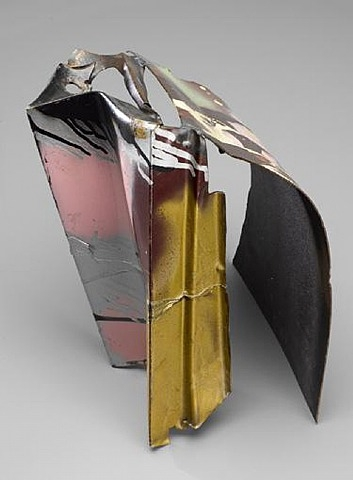الرقص في الظلام - جون تشامبرلين
ينشأ الكائن الذي تم العثور عليه من مشكلة الكائن الفرنسي ، الذي يصف الفن الذي
تم إنشاؤه من أشياء أو منتجات غير مخفية ، ولكن غالبًا ما يتم تعديلها ، والتي لا تعتبر عادةً مواد صنع الفن منها ، غالبًا لأن
لها بالفعل
وظيفة غير فنية. بابلو بيكاسو استخدم الفكرة علنًا لأول مرة عندما قام بلصق صورة مطبوعة لعصا الكرسي على لوحته بعنوان Still Life with
Chair Caning (1912). مارسيل دوشامبيُعتقد أنه قد أتقن هذا المفهوم بعد عدة سنوات عندما صنع سلسلة من الأدوات الجاهزة ،
تتكون من أشياء يومية غير متغيرة تمامًا اختارها دوشامب وتم تصنيفها على أنها فنية. أشهر مثال على ذلك هو
Fountain (1917) ، وهي مبولة قياسية تم شراؤها من متجر لاجهزة الكمبيوتر وعرضها على قاعدة
، وتستقر على جانبها.
بالمعنى الدقيق للكلمة ، يتم تطبيق مصطلح الفن "جاهز" حصريًا على الأعمال التي أنتجها مارسيل دوشامب ، الذي استعار
المصطلح من صناعة الملابس أثناء إقامته في نيويورك ، وخاصة الأعمال التي يرجع تاريخها إلى الفترة من عام 1913 إلى عام 1921.
الأشياء التي تم العثور عليها تستمد هويتها كفن من التسمية التي وضعها الفنان ومن التاريخ الاجتماعي الذي يأتي مع الكائن.
يمكن الإشارة إلى ذلك إما من خلال البلى المجهول (كما هو الحال في كولاجكيرت شويترز) أو من خلال التعرف عليها كأيقونة
المستهلك (كما في منحوتات حاييم شتاينباخ). يعتبر السياق الذي يتم وضعه فيه عاملاً وثيق الصلة أيضًا. كانت فكرة تكريم
الأشياء الشائعة بهذه الطريقة في الأصل تحديًا صادمًا للتمييز المقبول بين ما كان يعتبر فنًا وليس فنًا. على الرغم من
أنه
قد يتم قبولها الآن في عالم الفن كممارسة قابلة للتطبيق ، إلا أنها لا تزال تثير التساؤلات ، كما هو الحال مع معرض
Tate Gallery's Turner Prize لـتريسي امينسريري ، الذي يتألف حرفيا من سريرها غير المرتب والأشعث. بهذا المعنى
، يمنح الفنان الجمهور وقتًا
ومرحلة للتفكير في شيء ما. يمكن أن يؤدي تقدير الأشياء الموجودة بهذه الطريقة إلى التفكير الفلسفي في المراقب.
ومع ذلك ، كشكل فني ، تميل الأشياء التي تم العثور عليها إلى تضمين ناتج الفنان - على الأقل فكرة عنه
، أي تعيين الفنان للموضوع على أنه فن - والذي
يتم تقويته دائمًا تقريبًا بعنوان. عادة ما يكون هناك درجة معينة من التعديل على الكائن الذي تم العثور عليه ، على الرغم
من أنه ليس دائمًا إلى الحد الذي لا يمكن التعرف عليه ، كما هو الحال مع المواد الجاهزة. ومع ذلك ، قد تجادل النظرية النقدية
الحديثة بأن مجرد تعيين ونقل أي كائن ،
بما في ذلك المواد الجاهزة ، يشكل تعديلاً للكائن لأنه يغير تصورنا لفائدته أو عمره أو حالته.
حركة الكيتش
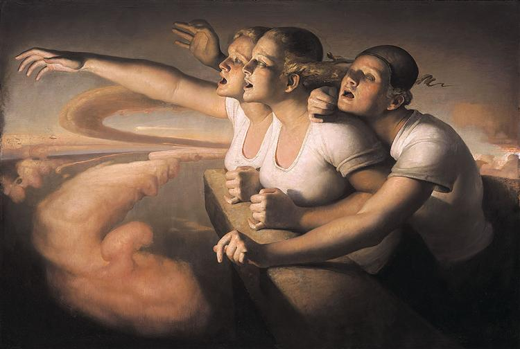عودة الشمس - غريب نيردرم
Kitsch (/ ˈkɪtʃ / ؛ كلمة مستعارة من الألمانية) ، وتسمى أيضًا جبنة أو مبتذلة ، هي فن أو أشياء أخرى تروق للذوق الشعبي أو غير
المزروع لأنها متوهجة أو عاطفية بشكل مفرط ، مما يعني أن الآخرين يعتبرون هذه
الأشياء قبيحة ، بدون أسلوب ، أو خاطئ ، أو ذوق سيء ولكن يتمتع به أو يقدره
الآخرون بطريقة ساخرة أو معرفية أو لأنه مضحك. تم تطبيق الكلمة لأول مرة على
الأعمال الفنية التي كانت استجابة لتقسيمات معينة من فن القرن التاسع عشر
بجماليات فضلت ما اعتبره نقاد الفن لاحقًا عاطفيًا مبالغًا فيه وميلودراما.
ومن ثم ، يرتبط "الفن الهابط" ارتباطًا وثيقًا "بالفن العاطفي". يرتبط Kitsch أيضًا بمفهوم المخيم ،
بسبب طبيعته الدعابة والساخرة.
إن تصنيف الفن المرئي على أنه "كيتش" أمر تحقير بشكل عام ، لأنه يشير
إلى أن العمل المعني مبهرج ، أو أنه يخدم غرضًا تزيينيًا وزخرفيًا فقط بدلاً من أن يكون بمثابة عمل ذي جدارة
فنية حقيقية. فنان علبة الشوكولاتةتوماس كينكيد(1958-2012) ، الذي غالبًا ما كان النقاد الفنيون يسخرون
من مناظره الطبيعية الشاعرية باسم "مودلين" و "شمالتزي" ، يعتبر مثالًا رائدًا على الفن الهابط المعاصر.
حركة الفن العلائقي
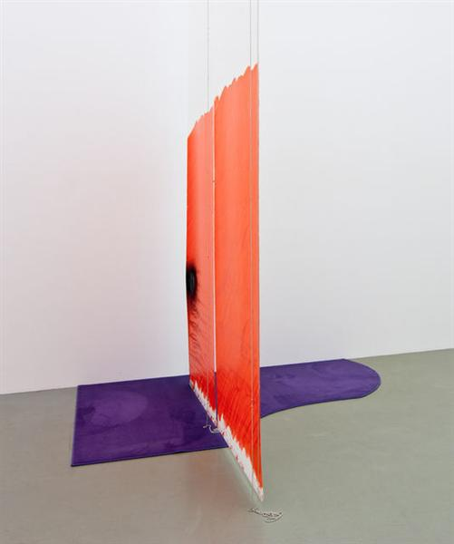السقف الذي يبلغ ارتفاعه 17 قدماً - ستيفن برينا
تم تحديد حركة فنية في التسعينيات من قبل نيكولا بوريود ،
أمين معارض وناقد فني فرنسي. لقد أدرك أن عددًا متزايدًا من الفنانين المعاصرين
يستخدمون تقنيات أداء وتفاعلية تعتمد على ردود الآخرين: المشاة ، المتسوقون ، المتصفحات ، المراقب العرضي
الذي تحول إلى مشارك. رأى بوريود الفنانين كميسرين وليس صناع واعتبر الفن معلومات متبادلة بين الفنان
والمشاهدين. الفنان ، بهذا المعنى ، يمنح الجمهور إمكانية الوصول إلى القوة والوسائل لتغيير العالم.
تم استخدام المصطلح لأول مرة في عام 1996 ، في كتالوج معرض "المرور" برعاية بوريود في CAPC musée d'art contemporain de Bordeaux
، ثم تم تطويره في عام 1998 في كتاب Bourriaud "Esthétique linksnelle" (الجماليات العلائقية). ضمن هذا المفهوم
، يخلق العمل الفني بيئة اجتماعية
يجتمع فيها الأشخاص للمشاركة في نشاط مشترك. يدعي بوريود أن "دور الأعمال الفنية لم يعد تشكيل حقائق خيالية وطوباوية
، بل أن تكون في الواقع طرقًا للعيش ونماذج للعمل ضمن النطاق الحقيقي الموجود ، بغض النظر
عن النطاق الذي يختاره الفنان".
في الفن العلائقي ، يُنظر إلى الجمهور على أنه مجتمع. بدلاً من أن يكون
العمل الفني لقاء بين عارض وكائن ، ينتج الفن
العلائقي مواجهات بين الذات. من خلال هذه اللقاءات ، يتم تطوير المعنى بشكل جماعي ، وليس في فضاء الاستهلاك الفردي.
حركة الفانك

الأنسة جارمنيت - جيم نوت
فن الفانك هي حركة فنية أمريكية كانت بمثابة رد فعل ضد عدم موضوعية
التعبيرية المجردة. حركة مناهضة للمؤسسة ، أعاد فن
الفانك التصوير مرة أخرى كموضوع في الرسم مرة أخرى بدلاً من قصر نفسه على الأشكال المجردة غير التصويرية التي يستخدمها
التعبيريون التجريديون مثلجاكسون بولوك و مارك روثكوكانوا يصورون. اشتق اسم الحركة من مصطلح موسيقى الجاز
"غير تقليدي" ، الذي يصف العاطفة والحسية والغريبة. خلال عشرينيات القرن الماضي ، كان يُنظر إلى موسيقى الجاز على
أنها موسيقى أساسية للغاية وغير متطورة ، واعتقد الكثير من الناس أن الفانك كان أسلوبًا فنيًا غير مكرر أيضًا.
كان لمصطلح الفانك أيضًا دلالات سلبية لأن الكلمة لها علاقة برائحة كريهة. طوال الستينيات والسبعينيات من القرن
الماضي ، كان الفانك شكلاً فنياً مشهوراً ، ولا سيما في منطقة خليج كاليفورنيا في الولايات المتحدة. على الرغم
من مناقشتها كحركة متماسكة ، لم يشعر فنانو الفانك كما لو كانوا ينتمون إلى أسلوب أو مجموعة فنية جماعية
. هذا لأنه بينما يشترك فنانيها في نفس المواقف ويبدعون أعمالًا متشابهة ، لم يكونوا بالضرورة يعملون معًا.
كانت حركة فنك الفنية حركة فنية إقليمية ، وهي الأكثر انتشارًا في شمال كاليفورنيا.
بعض المدن البارزة التي تركزت فيها حركة الفانك تتكون من بيركلي ومقاطعة مارين وبيج سور ونورث بيتش. بدأ العديد من فناني
الفانك كـالحركة التصويرية لمنطقة الخليجالرسامين في الخمسينيات. نشأت الحركة من تحت الأرض البوهيمي في منطقة
الخليج. خلال الستينيات من القرن الماضي ، كانت منطقة الخليج ، وتحديداً سان فرانسيسكو ، بيئة حرة وروحية بسبب
ثقافة الفن البياتنيك ونشاط الشباب السياسي الذي كان رد فعل ضد حرب فيتنام التي كانت مستمرة في ذلك الوقت. توجد
مجموعة متنوعة من الثقافات المختلفة في المدينة ، بما في ذلك الشعر والجاز والفن. كانت حرية التفكير والثقافة
أحد الأسباب الرئيسية التي جعلت فن الفانك ، وهو مزيج من الرسم والنحت ، يمكن أن يتطور ويزدهر في منطقة الخليج.
على عكس الحركات السابقة ، مثلدادا و السرياليةلم يكن فن الفانك معنيًا
بالآداب العامة. كان فنانيها
ملتزمين بالتماهي مع أعمالهم على المستوى الشخصي بدلاً من المستوى الاجتماعي أو الوجودي. من خلال أعمالهم العبثية ، أظهر فنانو
الفانك مشاعر شخصية وعواطف وعمليات ، وبهذه الطريقة كان لعملهم علاقة أوثق بالطبيعة وليس بالثقافة. كانت للأعمال حرية إبداعية
وأظهرت حياة الفنانين وشخصياتهم وخبراتهم. عالج فنانو الفانك عملهم بروح الدعابة واللامعنى والمواجهة والجنس المبتذل ومراجع
السيرة الذاتية. في أعمالهم ، يتسم فناني الفانك أحيانًا باستنكار الذات والسخرية. على الرغم من أن الأعمال تتسم بروح الدعابة
، إلا أنها تغطي أحيانًا مسحة أكثر جدية. نظرًا لعدم وجود معنى واضح في العديد من القطع ، فإن فن الفانك يحتوي على إحساس بالغموض.
حركة الواقعية القصوى (الفائقة)
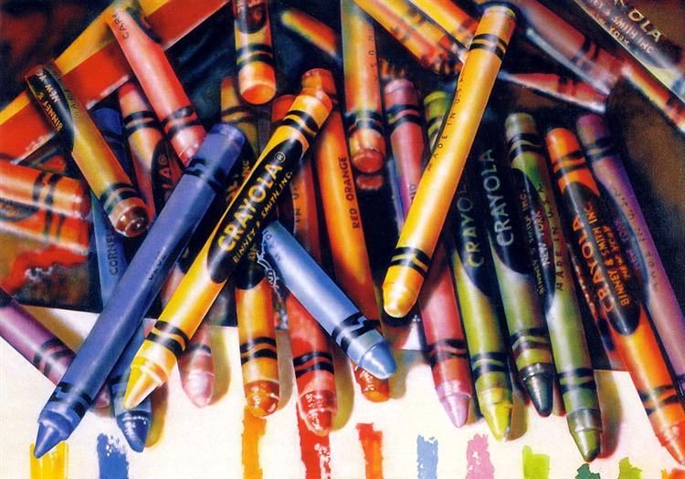كرايولا - أودري فلاك
الواقعية هي نوع من الفن يشمل الرسم والرسم والوسائط الرسومية الأخرى ،
حيث يدرس الفنان صورة ثم يحاول إعادة إنتاج الصورة بشكل واقعي قدر الإمكان في وسط آخر. على الرغم من أنه يمكن استخدام
المصطلح على نطاق واسع لوصف الأعمال الفنية في العديد من الوسائط المختلفة ، إلا أنه يستخدم أيضًا للإشارة على وجه
التحديد إلى مجموعة من اللوحات والرسامين للحركة الفنية الأمريكية التي بدأت في أواخر الستينيات وأوائل السبعينيات.
كحركة فنية كاملة ، تطورت الصورة الواقعية منفن البوب وكواجهة ل التعبيرية
المجردةوكذلك الحركات الفنية المبسطة في أواخر الستينيات وأوائل السبعينيات في
الولايات المتحدة. يستخدم المصورون الواقعيون صورة فوتوغرافية أو عدة صور فوتوغرافية لجمع المعلومات
لإنشاء لوحاتهم ويمكن القول إن استخدام الكاميرا والصور الفوتوغرافية هو قبولالحداثة. ومع ذلك ، فقد قوبل
قبول استخدام الصور في التصوير الواقعي بانتقاد شديد عندما بدأت الحركة تكتسب زخمًا في أواخر الستينيات
، على الرغم من حقيقة أن الأجهزة البصرية قد استخدمت منذ القرن الخامس عشر لمساعدة الفنانين في عملهم.
كان لاختراع التصوير الفوتوغرافي في القرن التاسع عشر ثلاثة تأثيرات على الفن:
فنانو البورتريه والمناظر الطبيعية كانوا يعتبرون أقل شأنا من الصورة وتحول الكثيرون إلى التصوير كمهن ؛ في إطار
الحركات الفنية في القرنين التاسع عشر والعشرين ، من الموثق جيدًا أن الفنانين استخدموا الصورة كمواد مصدر وكمساعد -
ومع ذلك ، فقد بذلوا جهودًا كبيرة لإنكار الحقيقة خشية أن يُساء فهم عملهم على أنه تقليد ؛ ومن خلال اختراع الصورة
، كان الفنانون منفتحين على قدر كبير من التجارب الجديدة. وهكذا ، كانت ذروة اختراع الصورة قطيعة في تاريخ
الفن نحو التحدي الذي يواجه الفنان - منذ أقدم رسومات الكهوف المعروفة - في محاولة لتكرار المشاهد التي شاهدوها.
بحلول الوقت الذي بدأ فيه المصورون الواقعيون في إنتاج أجسادهم من أعمالهم
، أصبحت الصورة وسيلة رائدة لإعادة إنتاج الواقع وكان التجريد محور عالم الفن. الواقعيةاستمرت كحركة فنية مستمرة
، حتى أنها عادت للظهور مرة أخرى في الثلاثينيات ، ولكن بحلول الخمسينيات من القرن الماضي ، قلل النقاد الحداثيون
والتعبيرية التجريدية من الواقعية كمشروع فني جاد. على الرغم من أن المصورين الواقعيين يشاركون بعض جوانب
الواقعيين الأمريكيين ، مثلإدوارد هوبر، حاولوا أن يميزوا أنفسهم عن الواقعيين التقليديين بقدر ما فعلوا
التعبيريون المجردون. تأثر المصورون الواقعيون كثيرًا بعملفناني البوبوكانوا يتفاعلون ضد التعبيرية التجريدية.
حركة الواقعية المعاصرة
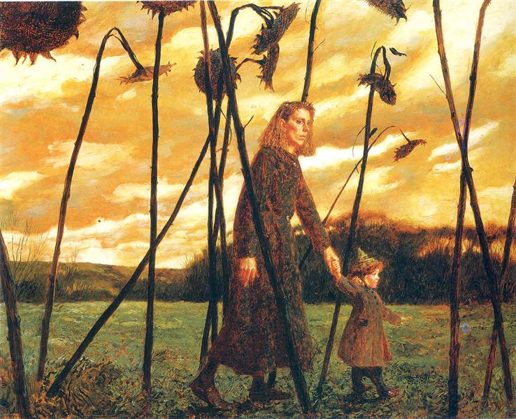جوليانا و عبادة الشمس - جيمي ويث
حركة الواقعية المعاصرة هي نمط أمريكا
الشمالية للرسم الذي ظهر إلى الوجود ج. الستينيات وأوائل السبعينيات. تتميز بمقاربة مباشرة للتمثيل الذي يمارسه
فنانون مثلفيليب بيرلشتاينو أليكس كاتز، جاك بيل و نيل ويليفر. تشير الحركة إلى الأعمال الفنية التصويرية التي
تم إنشاؤها بأسلوب طبيعي ولكنه موضوعي للغاية. يشمل مصطلح الواقعية المعاصرة اليوم جميع النحاتين والرسامين
في فترة ما بعد 1970 الذين يكون تخصصهم هو الفن التمثيلي ، حيث يكون الهدف هو تصوير "الحقيقي" وليس "المثالي".
بدأ بعض الواقعيين المعاصرين ، مثل Beal و Rackstraw Downes ، كرسامين مجردين مدربين. (تم ترسيخ التعبيرية
التجريدية بحلول عام 1960.) شجعت جيوب الفنانين الريفية (على سبيل المثال ، The Hamptons ؛ مناطق مين) الصور الطبيعية للبعض. تبادل آخرون النهج وطرقالواقعية.
استمرت بعض المدارس الفنية
، ولا سيما أكاديمية بنسلفانيا للفنون الجميلة ، في رعاية تراث الرسم الواقعي الأمريكي في القرن التاسع عشر. شهدت جامعة ييل شبكة فضفاضة ومتعددة الأجيال
من الرسامين التمثيليين على مدى العقود القليلة الماضية. تواصل أكاديمية نيويورك
للفنون تعزيز الفن التشكيلي المعاصر. ارتبط عدد من الفنانات بشكل بارز بالمتغيرات الأسلوبية للواقعية المعاصرة ، بما في ذلك (على سبيل المثال لا الحصر)
جين فريليشر ، جين ويلسون ، لويس دود ،جانيت فيشو كاثرين ميرفيوإيفون جاكيت ومارثا ماير إرليباخر.
حركة ترانسافانتجارد

ابراشيو - فرانشيسكو كليمنتي
Transavantgarde أو Transavanguardia هي النسخة الإيطالية من التعبيرية الجديدة، وهي حركة فنية اجتاحت
إيطاليا وبقية أوروبا الغربية في أواخر السبعينيات والثمانينيات. مصطلح transavanguardia صاغه الناقد الفني الإيطالي
أخيل بونيتو أوليفا ، نشأ في "Aperto '80" في بينالي البندقية ، ويعني حرفياً ما وراء الطليعة.
استجابت هذه الحركة الفنية إلى انفجار الفن المفاهيمي الذي
وجد العديد من وسائل التعبير ، من خلال إحياء الرسم وإعادة تقديم العاطفة - وخاصة الفرح - إلى الرسم والرسم والنحت. شهد
Transavantgarde عودة إلى الفن التشكيلي ،
فضلاً عن الصور الأسطورية ، التي أعيد اكتشافها خلال ذروة الحركة. أعاد الفنانون إحياء الفن التشكيلي ورمزية،
والتي كانت أقل استخدامًا في الحركات بعد الحرب العالمية الثانية مثل التقليلية. كان الفنانون الرئيسيون
transavantgardeساندرو شياو فرانشيسكو كليمنتيو انزو كوكشينيكولا دي ماريا وميمو بالادينو.
حركة اللوحة الأروبية الجديدة
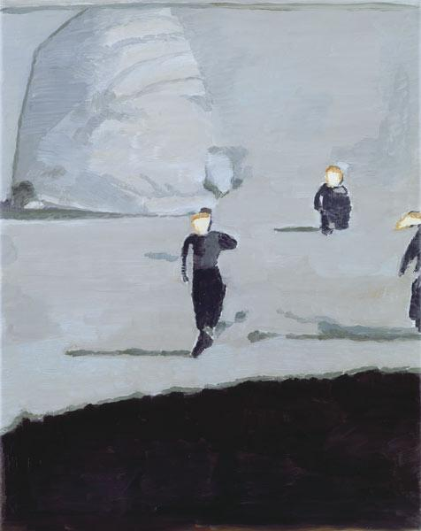المظليين - لوك تويمان
ظهرت اللوحة الأوروبية الجديدة في الثمانينيات ووصلت إلى نقطة
حرجة من التمييز والتأثير الرئيسيين
في التسعينيات مع رسامين مثل جيرهارد ريخترو سيغمار بولكو جورج باسيليتسوأنسيلم كيفر و براشا إيتنجررسخت
لوحاته ولا تزال تخلق حوارًا جديدًا بين الأرشيف التاريخي والتجريد الأمريكي والتصوير. يُظهر الرسامون الأوروبيون
الجدد الرئيسيون في هذا العصر ارتباطات قوية مع التاريخ الشخصي والعامة المؤلم ، فضلاً عن التاريخ المشترك ؛
ذاكرتها ونسيانها. ومع الحياة في ظل
الحرب العالمية الثانية ، باستخدام البحث في المواد الجديدة والقديمة والتصوير الفوتوغرافي والرسم الزيتي.
وتبع هؤلاء رسامون مثللوك تويمان، مارلين دوماس وآخرون. جاءت الموجة الثالثة بفنانين مثل Neo Rauch و Michaël Borremans
وكريس أوفيلي. التعبيرية الجديدةظهرت وغيرها من الحركات ذات الصلة في الرسم في
العقدين الأخيرين من القرن العشرين في أوروبا والولايات المتحدة ، لكن هذه اللوحة
الجديدة ليست تعبيرية. بل هو
نوع متجدد من التجريد والتصوير المرتبط بالممارسة الموازية للتحول إلى فن محفوظات الصور الفوتوغرافية الشخصية والتاريخية.
تتعلق اللوحة الأوروبية الجديدة بآثار ما بعد الصدمة للحرب وتتضمن الرسم الزيتي
والرسومات باستخدام وسائط جديدة مثل التصوير الفوتوغرافي وزيروكس والوسائط
الرقمية لإنشاء وتطوير أرشيف ما بعد الحداثة "حمى". ترتبط هذه اللوحة من خلال هذا الجانب بفن "أرشيف" ما بعد
الحرب العالمية الثانية مع فنانين مثلكريستيان بولتانسكيويوخن جيرز ، وغالبًا ما يكون جزءًا من هذا الاتجاه.
ومع ذلك ، على الرغم من أن هذه اللوحة لها ضربة تصويرية واضحة ، إلا أنها مرتبطة ارتباطًا وثيقًا بالتجريد
الغنائي بإعادة النظر المعاصرة للسامية في الفن بينما تخلق مساحة داخلية جديدة في الرسم وفي سلسلة اللوحات.
حركة التبسيط الجديدة

كاريس - شون سكالي
البساطة الجديدة هي حركة فنية غير متبلورة في أواخر القرن العشرين وأوائل
القرن الحادي والعشرين. وقد أطلق عليه بدلاً من
ذلك الفن "الهندسي الجديد" أو "الجيولوجي الجديد". تشمل المصطلحات الأخرى: المفاهيمية الجديدة ، والمستقبلية الجديدة
، والنيو أوب ، والنيوبوب ، والتجريد الجديد ، والقياسات البوبتومترية ، وما بعد التجريد ، والمحاكاة ، والفن الذكي.
تتضمن جوانب "فن ما بعد الحداثة" التي تم وصفها على أنها بساطتها الجديدة (والمصطلحات ذات الصلة) "إعادة تقييم عامة
لأشكال الفن السابقة". كما تشير عناوينها المختلفة ، تعتمد الحركة على التطورات التي حدثت في وقت مبكر من
منتصف إلى أواخر القرن العشرين في الفن البسيط ، والتعبيرية التجريدية وتطبيقاتها.الفروع، بالإضافة إلى
Pop Art و Op Art وخيوط أخرى للتطور الفني.
يشمل الفنانون المعاصرون الذين تم ربطهم بالمصطلح ،
أو الذين تم تضمينهم في العروض التي توظفهبيتر
هاليو فيليب تافيو لورنزو بيلنغويرو اشلي بيكرتونديفيد بورديني ، بول كون ، إيف زعيم ، بيتر شويف
، كريستوفر ويلاردوتيم زوك. التماثيل الفولاذيةريتشارد سيراتم وصفها بأنها "بساطتها الجديدة الصارمة ...."
حركة القصوى
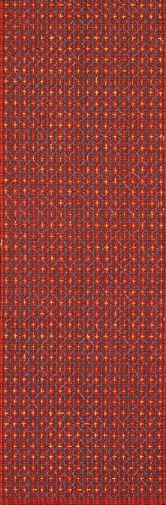ظهور الصلبان - دينغ يي
في الفنون ، والتطرف ، رد فعل ضد شيوع،
هو جمالية الزائدة والتكرار.
يمكن تلخيص الفلسفة على أنها
"أكثر هو أكثر" ، على النقيض من الشعار البسيط "الأقل هو الأكثر" ،
يرتبط مصطلح الحد الأقصى أحيانًا بروايات ما بعد الحداثة ، مثل روايات ديفيد فوستر
والاس وتوماس بينشون ، حيث الاستطراد والإشارة
، وتفصيل التفاصيل يشغل جزءًا كبيرًا
من النص. يمكن أن يشير إلى أي شيء يُنظر إليه على أنه مفرط ومعقد بشكل علني و "مبهرج"
، مما يوفر مبالغة زائدة عن
الحاجة في الميزات والمرفقات ، أو الجاذبية في الكمية والنوعية ، أو الميل إلى الزيادة والتراكم.
يعرّف الروائي جون بارث الحد
الأقصى الأدبي
من خلال معارضة الكنيسة الرومانية الكاثوليكية في العصور الوسطى بين "طريقين ... طريقين إلى النعمة":
يشرح تاكايوشي إيشيواري تعريف بارث من خلال تضمين نهج ما بعد الحداثة لمفهوم الأصالة. هكذا:
في الموسيقى ، يستخدم ريتشارد تاروسكين مصطلح "الحد الأقصى" لوصف الحداثة في
الفترة من 1890 إلى 1914 ، خاصة في المناطق الناطقة بالألمانية ، معرّفًا إياها بأنها "تكثيف جذري
للوسائل نحو الغايات المقبولة أو التقليدية". ومع ذلك ، فقد تم الطعن في هذا الرأي على أساس أن Taruskin
يستخدم المصطلح فقط كـ "دلالة فارغة" مليئة "بمجموعة من السمات
الموسيقية - التنسيق الكبير والتعقيد الحركي والتوافقي ، وما إلى ذلك - التي يأخذها إلى كن نموذجيًا للحداثة ". على
أي حال ، لم يولد تاروسكين هذا المعنى للمصطلح ، الذي استخدم بحلول منتصف الستينيات للإشارة إلى الملحنين الروس من
نفس الفترة ، والذين كان سيرجي بروكوفييف "آخرهم". يعرّف المؤلف الموسيقي ديفيد أ جافي الموسيقى المعاصرة المتطرفة
بأنها "يحتضن عدم التجانس ويسمح للأنظمة المعقدة من التجاور والتصادمات ، حيث يُنظر إلى جميع التأثيرات الخارجية على
أنها مادة خام محتملة ". ومن الأمثلة على ذلك موسيقى إدجارد فاريس ، وتشارلز آيفز ، وفرانك زابا. وبمعنى مختلف ، تم
وصف ميلتون بابيت بصفته "متطرفًا معترفًا به" ، فإن هدفه هو "تأليف الموسيقى بقدر ما يمكن بدلاً من أن تكون صغيرة بقدر
ما يمكن للمرء أن يفلت منه". من ناحية أخرى ، يعتبر ريتشارد توب أن الحد الأقصى للموسيقى "يجب فهمه على الأقل جزئيًا
باسم "antiminism" ". كما تم وصف Kanye West's My Beautiful Dark Twisted Fantasy (2010) بأنه عمل متطرف.تشمل الأمثلة موسيقى إدجارد فاريز وتشارلز
آيفز وفرانك زابا. بمعنى آخر ،
وُصف ميلتون بابيت بأنه "متطرف مُعلن" ، هدفه هو "تأليف الموسيقى بقدر ما يمكن أن تكون بدلاً من أن تكون صغيرة بقدر ما يمكن للمرء أن يفلت منه". من ناحية أخرى ، يرى ريتشارد توب أن الحد الأقصى للموسيقى "يجب أن يُفهم جزئيًا على الأقل على
أنه" مناهض للنسق ". تم وصف Kanye West's My Beautiful Dark Twisted Fantasy (2010) بأنه عمل متطرف.تشمل الأمثلة موسيقى
إدجارد فاريز وتشارلز آيفز وفرانك زابا. بمعنى آخر ،
وُصف ميلتون بابيت بأنه "متطرف مُعلن" ، هدفه هو "تأليف الموسيقى بقدر ما يمكن أن تكون بدلاً من أن تكون صغيرة بقدر ما يمكن للمرء أن
يفلت منه". من ناحية أخرى ، يرى ريتشارد توب أن الحد الأقصى للموسيقى "يجب أن يُفهم جزئيًا على الأقل على أنه" مناهض للنسق ". تم وصف Kanye West's My Beautiful Dark Twisted Fantasy (2010) بأنه عمل متطرف.يعتبر أن التطرف الموسيقي "يجب أن يُفهم على الأقل جزئيًا على أنه" مناهض للنسق ".
تم وصف Kanye West's My Beautiful Dark Twisted Fantasy (2010) بأنه عمل متطرف.يعتبر أن التطرف
الموسيقي "يجب أن يُفهم على الأقل جزئيًا على أنه" مناهض للنسق ". تم وصف Kanye West's My Beautiful Dark Twisted Fantasy
(2010) بأنه عمل متطرف.
حركة فن الشارع
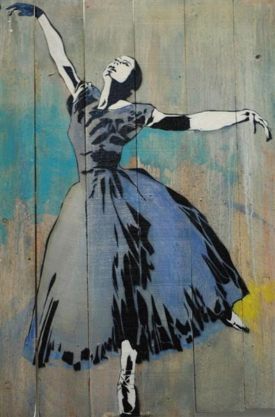راقصة الباليه - لو رات
فن الشارع هو فن بصري تم إنشاؤه في الأماكن العامة ، وعادة ما يتم تنفيذ أعمال فنية غير مصرح بها خارج سياق
الأماكن الفنية التقليدية. المصطلحات الأخرى لهذا النوع من الفن يمكن أن تكون "الفن الحضري"
و "فن حرب العصابات" و "الفن العام المستقل" و "ما بعد الجرافيتي" و "الجرافيتي الجديد". يمكن أن تشتمل الأشكال والوسائط
الشائعة على طلاء بالرشالكتابة على الجدران، والكتابات على الجدران بالاستنسل ، وفن الملصقات المعجون بالقمح ، وفن الملصقات ،
وتركيبات الشوارع ، والنحت. اكتسب عرض الفيديو وتفجير الغزل بعض الشعبية أيضًا بالقرب من مطلع القرن الحادي والعشرين.
فن الشارع هو شكل من أشكال الأعمال الفنية التي يتم عرضها في مجتمع ما
في المباني والشوارع المحيطة به وغيرها من الأسطح المعروضة للجمهور. تأتي العديد من الأمثلة في شكل فن حرب العصابات ،
والذي يتكون من أجل إصدار بيان عام حول المجتمع الذي يعيش فيه الفنان. انتقل العمل من بدايات الكتابة على الجدران
والتخريب إلى أنماط جديدة حيث يعمل الفنانون على إيصال الرسائل ، أو مجرد الجمال البسيط ، إلى الجمهور.
يستخدم بعض الفنانين
"التخريب الذكي" كوسيلة لزيادة الوعي بالقضايا الاجتماعية والسياسية. يرى البعض الآخر ببساطة المساحة الحضرية كتنسيق
غير مستغل للأعمال الفنية الشخصية ، بينما قد يقدر الآخرون التحديات والمخاطر المرتبطة بتركيب الأعمال الفنية
غير المشروعة في الأماكن العامة. الدافع الشائع هو أن إنشاء الفن بتنسيق يستخدم المساحات العامة يسمح للفنانين
الذين قد يشعرون بالحرمان من الوصول إلى جمهور أوسع بكثير مما تسمح به الأنماط أو صالات العرض الأخرى.
إن شعارات الاحتجاج والتعليقات السياسية أو الاجتماعية المرسومة على
الجدران العامة
هي مقدمة للكتابات الحديثة وفن الشارع ، وتستمر كأحد جوانب هذا النوع. أصبح فن الشارع على شكل نص أو رسومات
أيقونية بسيطة في سياق أيقونات الشركات معروفة جيدًا ولكنها رموز غامضة لمنطقة أو عصر. بعض الفضل في كتابات
كيلروي كان هنا في حقبة الحرب العالمية الثانية كأحد الأمثلة المبكرة ؛ رسم خط بسيط لرجل طويل الأنف يحدق من
خلف حافة. تطرق المؤلف تشارلز باناتي بشكل غير مباشر إلى الجاذبية العامة لفن الشارع في وصفه لكتابات "كيلروي"
على الجدران بأنها "شائنة ليس لما قيل ، ولكن حيث ظهرت". الكثير مما يمكن تعريفه الآن على أنه فن شوارع حديث له
أصول موثقة جيدًا تعود إلى طفرة الجرافيتي في مدينة نيويورك ، مع بدايتها في الستينيات ،النضج في السبعينيات ،
وبلغ ذروته مع اللوحات الجدارية لقطار مترو الأنفاق المرسوم بالكامل بالرش في الثمانينيات المتمركزة في برونكس.
حركة انخفاض المستوى
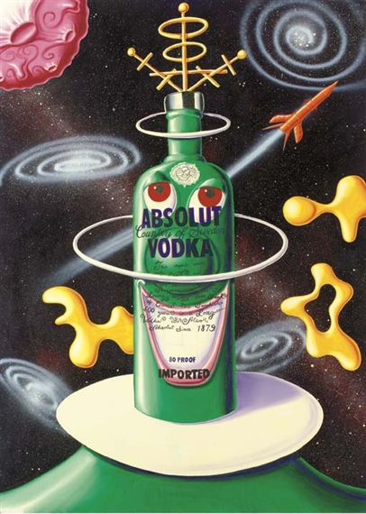الفضاء الداخلي - كيني شارف
يصف Lowbrow ، أو الفن المنخفض المستوى ، حركة فنية بصرية تحت الأرض نشأت في منطقة لوس أنجلوس ،
كاليفورنيا في أواخر السبعينيات. إنها حركة فنية شعبوية لها جذورها الثقافية في الرسوم الهزلية تحت الأرض ،
وموسيقى البانك ، وثقافات الشوارع الساخنة. وغالبًا ما يُعرف أيضًا باسم البوب السريالية. غالبًا ما يتمتع فن Lowbrow
بروح الدعابة - أحيانًا تكون الدعابة مبهجة ، وأحيانًا شيطانية ، وأحيانًا تكون تعليقًا ساخرًا.
معظم الأعمال الفنية البسيطة عبارة عن لوحات ، ولكن هناك أيضًا ألعاب وفنون رقمية ونحت.
كان بعض الفنانين الأوائل الذين ابتكروا ما أصبح يُعرف بالفن المنخفض المستوى رسامي كاريكاتير تحت الأرض مثل روبرت ويليامز
وغاري بانتر. كانت العروض المبكرة في صالات عرض بديلة في نيويورك ولوس أنجلوس مثل معرض ساسيديليك سوليوشنز في غرينتش فيلادج ،
مدينة نيويورك الذي كان يديره جاكايبر كاستور ، لا لوز دي جيسوس الذي يديره بيلي شاير و 01 معرض في هوليوود ، يديره جون بوشنا.
نمت الحركة
بشكل مطرد منذ بدايتها ، مع تبني مئات الفنانين هذا الأسلوب. ومع ازدياد عدد الفنانين ، زاد عدد صالات العرض التي تعرض
Lowbrow ؛ على الأرجح ، كان
أول معرض فني رسمي يأخذ الفن على محمل الجد هو معرض جولي ريكو في سانتا مونيكا مع العرض الفردي "لوني فيرتوز" ، في عام
1992 للفنان أنتوني أوسجانج.واصل معرض بيس كاتلر أيضًا عرض الفنانين المهمين وساعد في توسيع نوع الفن الذي تم تصنيفه على أنه
Lowbrow. كانت مجلة Lowbrow Juxtapoz التي كتبها روبرت ويليامز ، والتي نُشرت لأول مرة في عام
1994 ، الدعامة الأساسية للكتابة عن الفن المنخفض المستوى وساعدت في توجيه الحركة وتنميتها.
لاحظ الكتاب أن هناك الآن فروقًا يجب رسمها بين كيفية ظهور المتدنية في مناطق
وأماكن مختلفة. يرى البعض أسلوبًا متميزًا "للساحل الغربي" للولايات المتحدة ، والذي يتأثر بشكل أكبر بالكوميكس تحت
الأرض وثقافة سيارات العصا الساخنة أكثر من أي مكان آخر. نظرًا لانتشار أسلوب المستوى المنخفض في جميع أنحاء العالم
، فقد اختلط مع الاتجاهات السائدة في الفنون المرئية لتلك الأماكن التي أسس فيها نفسه. مع تطور المستوى المنخفض
، قد يكون هناك تفرع (كما كان الحال مع الحركات الفنية السابقة) إلى خيوط مختلفة وحتى حركات فنية جديدة كاملة.
حركة الفن العالق
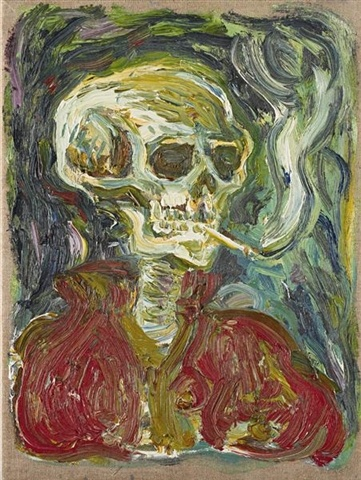هيكل عظمي - بيل سكلاش
Stuckism هي حركة فنية دولية تأسست في
1999 من قبل بيلي تشايلدش وتشارلز طومسون للترويج للرسم التصويري بدلاً من الفن التصوري. بحلول مايو
2017 ، توسعت المجموعة الأولية المكونة من 13 فنانًا بريطانيًا إلى 236 مجموعة في 52 دولة.
أصدر Childish و Thomson عدة بيانات. الأول كان The Stuckists ، ويتألف من 20 نقطة تبدأ بعبارة "Stuckism بحث عن الأصالة". إعادة الحداثة
، البيان الآخر المعروف للحركة ،
هو نقد لما بعد الحداثة. يهدف إلى العودة إلى الروح الحقيقية لـالحداثة، لإنتاج فن ذي قيمة روحية بغض النظر
عن الأسلوب أو الموضوع أو الوسيلة. في بيان آخر يعرّفون أنفسهم على أنهم مناهضون للفن ومناهض للفن وللفن.
كان هناك أحد عشر عضوًا مؤسسًا
آخر: فيليب أبسولون ، وقلعة فرانسيس ، وشيلا كلارك ، وإيمون إيفرال ، وإيلا جورو ، وولف هوارد ، وبيل لويس ،
وسانشيا لويس ، وجو ماشين ، وسيكستون مينج ، وتشارلز ويليامز. تطورت العضوية منذ تأسيسها من خلال التعاون
الإبداعي: تم الترويج للمجموعة في الأصل على أنها تعمل في مجال الرسم ، لكن الأعضاء عملوا منذ ذلك الحين في
العديد من الوسائط الأخرى ، بما في ذلك الشعر والخيال والأداء والتصوير الفوتوغرافي والأفلام والموسيقى.
في عام 1979 ، كان طومسون ، تشايلديش ، بيل لويس ومينغ أعضاء في مجموعة أداء الشعراء ميدواي ، التي ساهم فيها أبسولون وسانشيا لويس سابقًا. قام Peter Waite's Rochester Pottery بسلسلة من عروض الرسم الفردي. في عام 1982 ، قامت TVS ببث فيلم وثائقي عن الشعراء. في تلك السنة ، بدأ Emin ، الذي كان طالبًا في مجال الأزياء ، علاقة ؛ تم تحرير كتاباتها بواسطة بيل لويس ، وطبعها طومسون ونشرتها تشايلديش. نشر أعضاء المجموعة عشرات الأعمال. تفرقت المجموعة
الشعرية بعد عامين ، واجتمعت مرة أخرى في عام 1987 لتسجيل The Medway Poets LP. شارك كلارك وهوارد
وماشين في السنوات التالية. تعرف طومسون على ويليامز ،
التي كانت طالبة فنون محلية وكانت صديقتها صديقة لأمين.
التقى طومسون أيضًا بإيفرال. أثناء تأسيس المجموعة
، أحضر مينغ صديقته جورو ،الذي بدوره دعا القلعة.